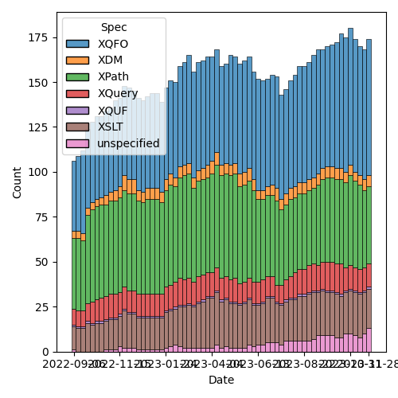
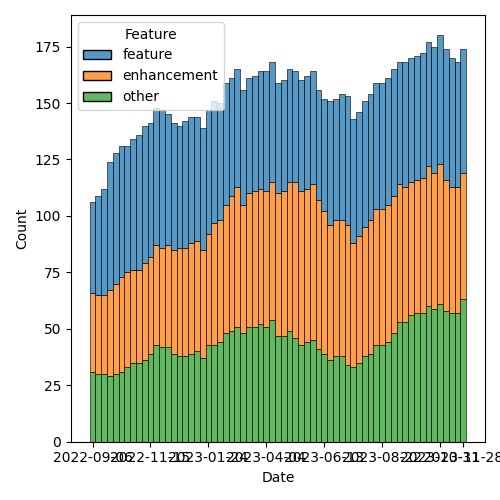

QT4 CG Meeting 057 Minutes 2023-12-05
Table of Contents
Agenda index / QT4CG.org / Dashboard / GH Issues / GH Pull Requests
Draft Minutes
Summary of new and continuing actions [0/8]
[ ]QT4CG-052-02: NW to consider how to schedule an “editor’s meeting”[ ]QT4CG-052-05: MK to rename thehexBinary-equalfunction tobinary-equal?[ ]QT4CG-052-06: MK to consider the editorial question of “promotion” for the symmetric relations.[ ]QT4CG-055-01: MK to clarify that the return type of the deep lookup operator is a flat sequence.[ ]QT4CG-056-04: MK to write a proposal for adding a select attribute to xsl:text[ ]QT4CG-057-01: CG to make a PR for changing items to subsequence in some functions.[ ]QT4CG-057-02: CG to make the list of options in deep-equal alphabetical again[ ]QT4CG-057-03: CG to attempt to clarify that the unordered option in deep-equal only applies to the top-level sequence
1. Administrivia
1.1. Roll call [11/11]
[X]Reece Dunn (RD)[X]Sasha Firsov (SF)[X]Christian Grün (CG)[X]Joel Kalvesmaki (JK) [:10-][X]Michael Kay (MK)[X]John Lumley (JL)[X]Dimitre Novatchev (DN)[X]Wendell Piez (WP)[X]Ed Porter (EP)[X]C. M. Sperberg-McQueen (MSM)[X]Norm Tovey-Walsh (NW). Scribe. Chair.
1.2. Accept the agenda
Proposal: Accept the agenda.
Accepted.
1.2.1. Status so far…

Figure 1: “Burn down” chart on open issues

Figure 2: Open issues by specification

Figure 3: Open issues by type
1.3. Approve minutes of the previous meeting
Proposal: Accept the minutes of the previous meeting.
Accepted.
1.4. Next meeting
The next meeting is scheduled for Tuesday, 12 December 2023.
Any regrets for the next meeting?
None heard.
1.5. Review of open action items [4/9]
[ ]QT4CG-052-02: NW to consider how to schedule an “editor’s meeting”[ ]QT4CG-052-05: MK to rename thehexBinary-equalfunction tobinary-equal?[ ]QT4CG-052-06: MK to consider the editorial question of “promotion” for the symmetric relations.[ ]QT4CG-055-01: MK to clarify that the return type of the deep lookup operator is a flat sequence.[X]QT4CG-055-02: DN to open an issue requesting examples of implausible expressions to clarify the spec[X]QT4CG-056-01: MK to update PR #479 so that it merges cleanly.[X]QT4CG-056-02: MK to update PR #412 so that it merges cleanly.[X]QT4CG-056-03: MK to draft a PR to remove the function-namespaces feature.[ ]QT4CG-056-04: MK to write a proposal for adding a select attribute to xsl:text
1.6. Review of open pull requests and issues
1.6.1. Merge without discussion
The following PRs are editorial, small, or otherwise appeared to be uncontroversial when the agenda was prepared. The chairs propose that these can be merged without discussion. If you think discussion is necessary, please say so.
Proposal: accept without discussion?
Accepted.
1.6.2. Substantive PRs
The following substantive PRs were open when this agenda was prepared.
- PR #855: 844 New sequence functions: names
- PR #849: 847 Allow uri-structure-record keys to have empty sequence values
- PR #832: 77 Add map:deep-update and array:deep-update
- PR #798: 479: fn:deep-equal: Input order
- PR #795: 655: fn:sort-with
- PR #737: 295: Boost the capability of recursive record types
- PR #529: 528: revision of json(), and renaming to elements-to-maps()
1.6.3. Proposed for V4.0
The following issues are labled “proposed for V4.0”.
- Issue #850: fn:parse-html: Finalization
- Issue #829: fn:boolean: EBV support for more item types
- Issue #716: Generators in XPath
- Issue #689: fn:stack-trace: keep or drop?
- Issue #583: array:replace(), etc
- Issue #557: fn:unparsed-binary: accessing and manipulating binary types
- Issue #340: fn:format-number: Specifying decimal format
- Issue #260: array:index-of
- Issue #33: json parsing number type option
- Issue #31: Extend FLWOR expressions to maps
2. Technical Agenda
2.1. PR #855: 844 New sequence functions: names
See PR #855.
CG walks us through the issue and the PR.
- CG:
…with-sequencebecomes…-with-subsequence - CG: Discussion of
items-after,items-before,items-starting-where, anditems-ending-where- … Using “subsequence” here would make the names even longer
- … One suggestion was a single function that has more arguments
- … Other languages have imperative sounding functions “take-while” and “drop-while”…
- … “Items” functions might be more expected for folks from the functional background
- … Some functions use verbs in the names.
- … Trying to avoid very long names.
- DN: I think this is a useful issue, but it just scratches the surface.
- … It’s telling us about the symptom, not the cause of the problem.
- … When we have to talk about items, members, pairs, etc. And sometimes we need to have functions in the fn, array, and map namespaces.
- … I think MK made a useful suggestion about having more general types of objects.
- … I think if we have one general, abstract type of collection then we could have all of these functions in different namespaces replaced by a single function.
- CG: I think that’s a good observation; in #843, I’ve listed all of the function duplication we already have. And we have new functions that we have to discuss if we need multiple equivalent versions of them.
- JL: What’s the argument for leaving off the inclusion version; is it just the name, or is it that there’s no use case.
- CG: Those are two points: one solution is that we could take the two
functions that allow you to drop the first or last value.
- … Or in many cases you can do it with just a couple of existing functions.
- … Some of the functions will be more common than others; you can always find arguments for all four, but are people really going to be aware of them all?
- … Many of these use cases can be written with other existing functions.
- JL: Then in the notes, I think it would be good to show some of these use cases in the examples.
- RD: There are really two challenges in creating common sequence,
array, and map functions. One is that an array or map is a single
item sequence. So doing a count on that object will return 1,
whereas array:size and map:size will return the number of elements.
- … We can’t change that behavior.
- … The other challenge is that the different functions have slightly different semantics. If you try to get a an item in an index of an array that doesn’t exist, it’ll throw an exception. But sequences just return an empty sequence. So you’ve got those semantic differences.
- CG: Yes, it would definitely be easier if we could start over!
- MK: I agree with everything RD said. Procedurally, do we focus on
the big issues per DN, or do we take a small step as CG is
proposing.
- … In terms of the detail of the PR, I sympathise with goals. But if we’re going to cut down from four to two, we’ve picked the wrong two!
- … We also have index-where that you can use to construct what you want.
- … One could argue that the family of four functions is excessive. But I’d keep
subsequence-beforeandsubsequence-starting-where.
- CG: What about
subsequence-where? - MK: I think it makes simple cases more difficult.
- JK: Subsequence-where doesn’t imply that they’re contiguous.
- CG: Yes, that’s true.
- MK: One could do it all by adding keywoard arguments to the existing subsequence function.
- CG: We could have
subsequence-fromandsubsequence-before - DN: I want to second what MK said. I think we’re making things more complex. That’s not good for users. In order to cure the symptoms, we’re making things more complicated.
- CG: The root cause is a really complex problem.
- DN: We should work on the root cause. I don’t think we’ve made the necessary effort yet.
- NW: Can we do it the other way around? Make complete parity across the namespaces?
- MK: It doesn’t work. There are semantic differences between arrays, maps, and sequences.
- NW: :-(
- SF: I hear the arguments that we can’t do it because of major incompatibilities.
- … But we could solve this problem by having functions in a new namespace.
- … If you want a particular semantics, you could point to at a specific namespace. That would eliminate the constraints on changing logic and versions.
- NW: More namespaces is better! It’s an interesting approach.
- RD: With this proposal, we’ve changed items to subsequence. That’s
uncontroversial and we should do it. The other change, combining the
functions is more controversial. We could separate the two.
- … Maybe we could investigate further and continue the analysis that CG has done.
- CG: I think we can drop
subsequence-where.- Rename items to subsequence
- How to rename the existing four functions and maybe deal with take-while and drop-while
- MSM: For the record, I hate replacing a two syllable word with a three syllable one but I don’t see a better alternative.
ACTION: CG to make a PR for changing items to subsequence in some functions.
2.2. PR #849: 847 Allow uri-structure-record keys to have empty sequence values
See PR #849.
NW introduces the question: what’s the goup’s opinion, should we allow
empty sequences in the uri-structure-record?
- MK: I’m in favor of making the fields optional.
- RD: +1
- NW: Okay, I’ll get this one tidied up for next week.
2.3. PR #832: 77 Add map:deep-update and array:deep-update
See PR #832.
Not ready for discussion.
2.4. PR #798: 479: fn:deep-equal: Input order
See PR #798.
CG walks us through the PR.
- CG: The idea is simple, in XQuery 3.1 there were no options on
fn:deep-equal. In 4.0, we have a lot of options.- … I propose a more general option
orderedorunorderedthat simply allows you to enforce order or to allow permutations. - … If you include this option, then you can use all the other options as well.
- … I propose a more general option
- MK: Did you say it was easy to implement?
- CG: Yes!
- MK: Congratulations!
Some discussion of how performance is impacted by an implementation.
- MK: An implementation with quadratic performance isn’t difficult!
- MK: I have a slight concern that we’re bundling too much into one function, but in principle it makes sense.
- DN: Maybe I don’t understand. If
unordered=truemeans that any sequence can be unordered (even element children), I think it’s very confusing. If a schema says the children can be any order, but another element says they have a particular order, would be gross violation of the schema. - CG shows an example with lists of atomic values.
- DN: I think it makes sense for atomic values.
- MK: My reading is that it only applies at the top level.
- DN: Then that needs to be made very clear! It needs to be emphasized.
Some discussion of how to improve the prose.
- MK: Perhaps it could be clarified in the description in the table.
- JL: I understand the mechanism for elements and their children. Is there any requirement for unordered comparisons further down?
- NW: Sometimes you just have to write your own function!
- RD: I was wondering if it could be useful in the element case for a test assertion of some sort, but if this is only at the top level… If you had unordered elements specified but unordered set to false, then that would work equivalently if the unordered elements were the same at the top level.
- MK: No, this is always the children.
Some further discussion of this use case.
- JL: Is there any argument for a wildcard on unordered elements?
- CG: Not sure. It has been discussed.
Proposal: Accept this PR?
Acccepted.
ACTION: CG to make the list of options in deep-equal alphabetical again
ACTION: CG to attempt to clarify that the unordered option in deep-equal only applies to the top-level sequence
2.5. Issue #829: fn:boolean: EBV support for more item types
Issue #829.
- CG: We have EBV for a number of conditionals. It comes form XPath
1.0 and has the semantics from there.
- … I think it would be useful to apply this to more types. Today you get an error for maps and arrays. We could also consider the binary types.
- … We could just return
trueif an item exists, or we could look into it. So an empty array could be eithertrueorfalse. - … Then you wouldn’t have to write
array:size() != 0
- MK: I think the big problem is that doing it the obvious way (empty maps and arrays are true) is different from Javascript.
- JK: But it’s the same as Python
- CG: Are there languages where it’s an error?
Java, for example, and other strongly typed languages.
- DN: We have more than one way to do this already? Don’t we have
existsandemptyin the array and map namespaces?- … I don’t see the needs for this. We already have ways to do this.
- CG: My experience is based on some user feedback. Users unfamiliar with XPath 1.0 just don’t understand why it’s sometimes an error.
- JK: Am I right in thinking that EBV is mostly frequently supported in predicate filters in XPath expresions?
- MK: Yes, that’s probably right.
- JK: So what does
array(*)mean in that case?
Some discussion of the use case. Something like [$a] where $a is
an array.
- RD: Here’s an example:
let $a := array {}
return if ($a) then 1 else 2
- CG: It would be nice if it didn’t give an exception.
- MK: Most advice is to be explicit.
- CG: But it’s very convenient that so much of XPath is concise!
- DN: I am not saying I support this, but looking at the table for
computing booleans, it’s very complicated.
- … It should be made easier. Getting the size of a big array just to see if it exists is very inefficient.
- MK: But that’s an easy optimization.
- CG: If you have EBV for sequences, you need the same check.
Who is in favor of extending EBV to cover more types.
In favor 4, opposed 3.5.
- NW: There’s no consensus yet. We’ll just leave that issue for now.
3. Any other business?
- DN: I did my action item.
- NW: Thank you, DN.